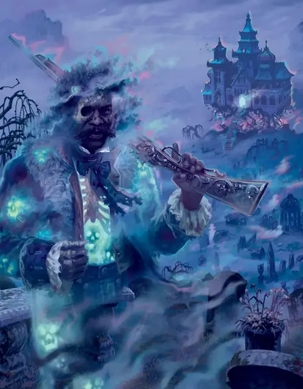

Вилфред Годфрой
Wilfred Godefroy
Средняя Нежить, Нейтральная Злая, именной НИП

Класс Защиты 12 Инициатива +2 (12)
Хиты 72 (16к8)
Скорость 30 футов, Полёта 30 футов
| мод | спас | ||
|---|---|---|---|
| СИЛ | 8 | −1 | −1 |
| ЛОВ | 14 | +2 | +2 |
| ТЕЛ | 10 | +0 | +0 |
| мод | спас | ||
|---|---|---|---|
| ИНТ | 13 | +1 | +1 |
| МДР | 14 | +2 | +2 |
| ХАР | 17 | +3 | +3 |
Сопротивление урону Дробящий, Колющий, Рубящий, Звук, Кислота, Огонь, Холод, Электричество
Иммунитеты Некротический, Яд; Бессознательный, Истощение, Окаменевший, Опрокинутый, Опутанный, Отравленный, Парализованный, Схваченный
Чувства Тёмное зрение 120 футов, пассивное Восприятие 15
Языки Общий
Опасность 6 (2 300 опыта или 2 900 опыта в Домене; БВ +3)
Особенности
Восстановление Тёмного владыки. Спустя 1к10 недель после смерти Вилфред возрождается с полными Хитами где-то в Морденте.
Легендарное сопротивление (3/день, или 4/день в Домене). Если Вилфред проваливает спасбросок, он вместо этого может в нём преуспеть.
Бестелесное перемещение. Вилфред может перемещаться через других существ и объекты, как если бы они были Труднопроходимой местностью. Он получает 5 (1к10) Силового урона, если завершает свой ход внутри объекта.
Аура одержимости. Хваткие призрачные слуги окружают Вилфреда в 5-футовой Эманации, исходящей от него. Существо, заканчивающее свой ход в этой области, подвергается следующему эффекту. Спасбросок Харизмы: Сл 14. Провал: Цель Очарована. Скорость Очарованного таким образом существа снижается до 0. Цель повторяет спасбросок конце каждого своего хода, оканчивая этот эффект на себе. Спустя 1 минуту она преуспевает в спасброске автоматически.
Действия
Мультиатака. Вилфред совершает две атаки Ударом объектом или Охотничьией винтовкой в любой комбинации.
Удар объектом. Бросок рукопашной атаки: +6, досягаемость 5 фт. Попадание: 10 (2к6 + 3) Силового урона.
Охотничья винтовка. Бросок дальнобойной атаки: +6, дистанция 40/120 фт. Попадание: 9 (1к12 + 3) Некротического урона.
Реакции
Перенаправление атаки. Условие: Существо, которое видит Вилфред, совершает по нему бросок атаки. Эффект: Вилфред выбирает Очарованное существо Среднего или Маленького размера в пределах 5 футов от себя. Затем Вилфред и это существо меняются местами, и существо становится целью атаки.
Легендарные действия
У этого существа есть 3 использования Легендарных действий (или 4 использования в Домене); оно может немедленно после окончания хода другого существа потратить одно использование, чтобы совершить одно из следующих действий. Существо восполняет все потраченные использования в начале каждого своего хода.
Стылокровый шаг. Вилфред телепортируется на расстояние вплоть до 60 футов в видимое им незанятое пространство, и каждое существо в пределах 10 футов от покинутого им пространства получает 4 (1к8) Некротического урона. Вилфред не может совершить это действие снова до начала своего следующего хода.
Роковая пуля. Спасбросок Ловкости: Сл 14, одно видимое Вилфредом существо в пределах 120 футов. Провал: 16 (2к12 + 3) Некротического урона, и цель не может восстанавливать Хиты до конца своего следующего хода. Провал или успех: Вилфред не может совершить это действие снова до начала своего следующего хода.
Размашистый удар. Вилфред совершает одну атаку Ударом объектом.
Бонус мастерства +3
Вилфред Годфрой
Тёмный владыка в муках призрачной нежизни
Лорд Вилфред Годфрой правит загробной жизнью всех, кто умирает в Морденте. Надменный, нетерпеливый и мстительный, этот Тёмный владыка хватается за любой шанс проявить власть и утвердить своё вечное благородное положение.
Лорд Годфрой обитает в Доме на Грифоньем холме вместе с бесчисленным множеством других духов. Вилфред способен рассылать сонмы послушных призраков исполнять его волю в любую точку домена. Власть над мёртвыми он использует, чтобы влиять на живых, угрожая причинить вред покойным близким своих жертв, если те не подчиняются его капризам.
Поколение назад создатели Аппарата — устройства, пронзающего Туманы, — исчезли из Мордента. Лорд Годфрой обнаружил скрытую машину, но, к своей величайшей досаде, не в силах её применить.
История Вилфреда
При жизни лорд Вилфред Годфрой был заурядным мелким аристократом. Столетия назад он унаследовал поместье Грифоний холм близ Морденшира, убив собственного отца и выдав это за несчастный случай. Годы спустя одной кровавой ночью всё семейство Годфрой — сам Вилфред, его жена Эстель и дочь Пенелопа — погибло от рук убийц. Но вместо того чтобы отойти в мир иной, души Годфроев застряли на Грифоньем холме. После смерти Вилфреда преследуют призраки его семьи, как недавней, так и прошлых поколений, виня его в своей гибели и бесчестии рода.
Поколение назад загадочный алхимик создал в Морденте устройство под названием Аппарат. Эта магическая машина обладала множеством фантастических сил, включая способность открывать проходы между планами и разделять доброе и злое начала живого существа, обращая их в два отдельных создания. Аппарат привлёк в Мордент множество могущественных сущностей, а затем — и сами Туманы, когда устройство дало сбой и вызвало смертоносную катастрофу. Туманы вобрали Мордент в Домены Ужаса, а загадочный алхимик исчез. С уходом более могущественных сущностей лорд Годфрой остался самым грозным злодеем этих земель. Ему и досталась роль Тёмного владыки нового домена — Мордента.
С тех пор Вилфред объявил себя властелином всех, кто умирает в Морденте. Он знает местонахождение Аппарата и стремится овладеть его силами, но от него ускользает как способ это сделать, так и местонахождение важнейшей детали машины — Жезла Растинона. Он не гнушается шантажом в отношении всякого, кто способен открыть секреты устройства или отыскать пропавший жезл. Вилфред вынуждает Алису Везермей, мэра Морденшира, рассказывать ему обо всех полезных гостях домена, держа в заложниках её покойного мужа Даниэля Фоксгроува.
Домен Вилфреда
Мордент, домен Вилфреда, изменяется из-за его присутствия, что создаёт следующие эффекты:
• Закрытие границ. Когда Вилфред находится в домене, он способен по желанию закрывать или открывать границы Мордента. Когда границы закрыты, Туманы вокруг Мордента наполняются стонами и шёпотом мертвецов. Существа в Туманах получают состояние Оглохший.
• Уши повсюду. Когда Вилфред находится в домене, он может сотворять заклинание Послание, не нуждаясь в Материальных компонентах (заклинательная характеристика — Харизма). При таком сотворении Вилфред может, помимо обычных целей, нацеливать заклинание на любую Нежить в Морденте.
• Призрачные слуги. Гуманоид, умерший в Морденте, восстаёт спустя 7 дней в виде Спектра под управлением Вилфреда, если не возвращён к жизни.
Если Вилфред умирает, все эти эффекты мгновенно исчезают. Они возникают вновь, если Вилфред возрождается (см. Восстановление Тёмного владыки).